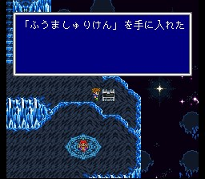
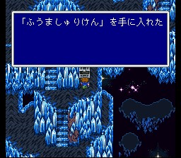
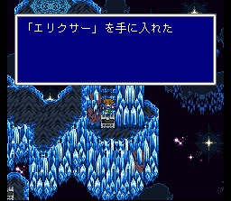
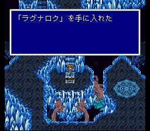
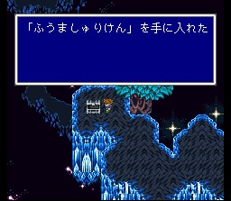

무의 세계
무의 세계의 몬스터들은 ABP는 굉장히 많이 주지면 경험치는 주지 않으니
유의하세요. 그리고 여기서부터는 텔레포가 안통합니다. 각별히 주의하시길..
길가메슈가 있는데 혼란한 듯합니다. 지금 정도의 실력이라면 땅짚고
헤엄치기입니다. 겐지의 방패를 훔쳐 두세요.
아래 네 번째 스크린샷은 라그나로크인데, 신룡이 버티고 있습니다. 진정한 FF5 최강의 적이라 할 수 있는 (매직포트는 죽이기 어렵다뿐이지..) 녀석입니다. 일단 처음에 전원 산호의 반지를 장착해야 전멸을 피할 수 있습니다. 약점이 없고 공격, 방어 모두 최강인 진정 어려운 녀석입니다만.. 비룡의 창이 많이 있다면 전원 장비하여 점프공격을 하거나, 드래곤파워를 건 후에 마법검 프레아 난타를 하는 등 여러 가지 방법이 있습니다. 이 녀석 어떻게 잡느냐는 FF5 특유의 재미입니다. 용의 채찍까지 훔친다면 (거기다가 증식까지 한다면) 고수 인정?
세이브존은 네크로포비아가 지키고 있습니다. 강력한 전체공격으로 바리어부터 부수시고.. 좀 싸우다보면 길가메슈가 나타나, 그동안 일행과 든 미운 정을 나누면서 네크로포비아를 대적합니다. 그리고 일행 모두에게 인사를 하고 나서 네크로포비아를 자폭하여 물리칩니다. 감동적인 장면에 좀 깨는 일이지만, 자폭하기 전에 길가메슈에게 겐지의 갑옷을 훔쳐두세요. 전투 종료 후 마지막 세이브존이 생깁니다.
드디어 마지막 싸움입니다. 새벽의 4전사와 타이쿤왕의 도움으로 엑스데스와 최후의 결전을 할 수 있게 되는데, 좀 싸우다보면 엑스데스는 자신이 살려낸 무에 의해 스스로 흡수되어 버리고, 다시 태어난 마음이 없는 존재, 네오엑스데스가 나타납니다.
최종보스는 방법이 많으니 잘 생각해서 싸워 보세요. 최종보스치고는 상당히 쉬운 놈들입니다. 팁이라면, 아랫부분은 마법검 브레이크가 먹히며 뒷부분은 매직램프를 이용하여 오딘을 소환하면 참철검이 먹혀 끝납니다. 그리고 어차피 마지막 싸움이니 돈이고 아이템이고 사정없이 던져 주시길..
이제
남은 것은 감동의 엔딩입니다.
평화로워진 세계의 곳곳을 비추면서 웅장한 음악과
함께 FF5는 막을 내립니다.
...AND YOU